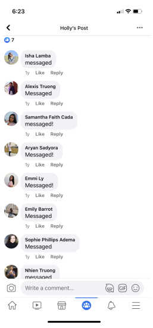
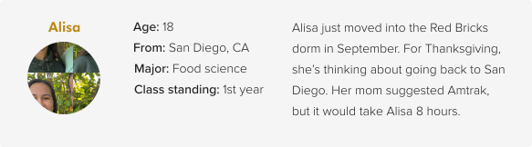
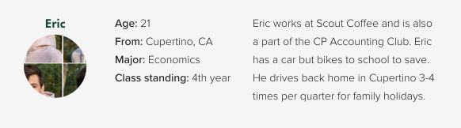
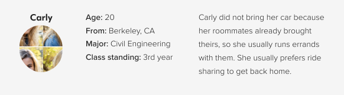

A ride share platform exclusively for Cal Poly students
Summary
Cal Poly students are currently using a Facebook group to offer and seek rides; however, it is unsafe, inconvenient, and adds complication to the process. Poly Ride is the solution to this ride sharing problem, allowing Cal Poly students to offer and seek rides safely, conveniently, and accurately.
In this project, I executed the end-to-end process from researching, ideating, wireframing, desiging interface, and prototyping.
Background
Being on the Central Coast, San Luis Obispo poses difficulties for students to commute to/from other cities. Many Cal Poly students do not have a car, so ride sharing is their main city-to-city transportation. The current channel for this is a Facebook group called “Cal Poly Ride Share” with 28.3K total members. Some common themes for this group include:
Irrelevant posts
Postings flooded with comments, even when the offer is full

Users



Pain Points
To know where users are having problems, I gathered secondary data by requesting Facebook Insights from the 28.3K-member group. In addition, I also conducted a survey myself with 30 Cal Poly students. The most common frustrations are:
1. Lack of trust (63% of respondents): The current process doesn't require any email or student status verification.
2. Time-consuming browse (80% of respondents): Users have to sift through every post to find the one they need.
3. Lengthy message process (63% of respondents): Postings usually miss many attributes, so users usually need to message a lot of people.
To tackle these pain points, I asked the questions:
• How might we ensure the platform is accessible to only Cal Poly students?
• How might we allow students to easily find the post they need?
• How might we improve the messaging process to be more efficient?
User Journey
User Flow
Wireframes
Prototype Overview
Testing
Method: To test Poly Ride's usability, I asked three users to perform the following tasks:
• Find all rides that go from San Jose to San Luis Obispo
• Check a ride to see if trunk space is available
• Message, confirm, and view upcoming ride
Insights: For the last task, it took participants more than anticipated clicks to view upcoming rides. Although trivial, it directly interferes with the primary user journey. Upon interviewing, I found out that the CTA button’s language was misleading, and the navigation icon was not prominent enough. To ensure a seamless experience for users, I adjusted the language and a few interactions:
Interactive Prototype
Reflection
Poly Ride was not brought to development, but it has proved great success from user feedback and testing. Poly Ride was able to address the primary pain points: the lack of trust, the time-consuming browse, and the lengthy message process.
Due to the scope of this project, a few features were not included but would be worth discussing in the future:
• In-app payment integration
• Set notification for a seeking criteria
• Car/personal identification sharing
I am working to send Poly Ride to the Cal Poly Center for Innovation and Entrepreneurship, where it can actually come to life. Please stay tuned!